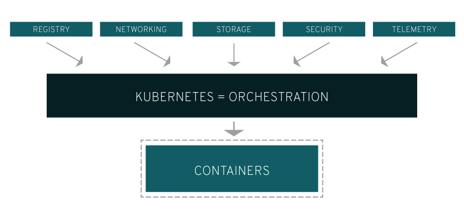

系列目录
1. 介绍
最近整体工作在往云原生和k8s上迁移，想将自己对于k8s的一些学习心得和经验写成一个系列记录下来。
2. 云计算
云计算是一种按使用量付费的模式，这种模式提供可用的、便捷的、按需的网络访问， 进入可配置的计算资源共享池（资源包括网络，服务器，存储，应用软件，服务），这些资源能够被快速提供，只需投入很少的管理工作，或与服务供应商进行很少的交互。
云计算最基本的特性是：“按使用量付费”、“资源共享池”和多租户隔离。
1.2 云计算的特点
- 超大规模
云具有相当的规模，Google 云计算已经拥有 100 多万台服务器， Amazon、IBM、微软、Yahoo 等的云均拥有几十万台服务器。企业私有云一般拥有数百上千台服务器。云能赋予用户前所未有的计算能力。
- 虚拟化
云计算支持用户在任意位置、使用各种终端获取应用服务。所请求的资源来自云，而不是固定的有形的实体。应用在云中某处运行，但实际上用户无需了解、也不用担心应用运行的具体位置。只需要一台笔记本或者一个手机，就可以通过网络服务来实现我们需要的一切，甚至包括超级计算这样的任务。
- 高可靠性
云使用了数据多副本容错、计算节点同构可互换等措施来保障服务的高可靠性，使用云计算比使用本地计算机可靠。
- 通用性
云计算不针对特定的应用，在云的支撑下可以构造出千变万化的应用，同一个云可以同时支撑不同的应用运行。
- 高可扩展性
云的规模可以动态伸缩，满足应用和用户规模增长的需要。
- 按需服务
云是一个庞大的资源池，你按需购买;云可以像自来水，电，煤气那样计费。
- 极其廉价
由于云的特殊容错措施可以采用极其廉价的节点来构成云，云的自动化集中式管理使大量企业无需负担日益高昂的数据中心管理成本，云的通用性使资源的利用率较之传统系统大幅提升，因此用户可以充分享受云的低成本优势，经常只要花费几百美元、几天时间就能完成以前需要数万美元、数月时间才能完成的任务。
- 潜在的危险性
云计算服务除了提供计算服务外，还必然提供了存储服务。但是云计算服务当前垄断在私人机构(企业)手中，而他们仅仅能够提供商业信用。对于政府机构、商业机构(特别像银行这样持有敏感数据的商业机构)对于选择云计算服务应保持足够的警惕。一旦商业用户大规模使用私人机构提供的云计算服务，无论其技术优势有多强，都不可避免地让这些私人机构以数据(信息)的重要性挟制整个社会。
对于信息社会而言，信息是至关重要的。另一方面，云计算中的数据对于数据所有者以外的其他用户云计算用户是保密的，但是对于提供云计算的商业机构而言确实毫无秘密可言。所有这些潜在的危险，是商业机构和政府机构选择云计算服务、特别是国外机构提供的云计算服务时，不得不考虑的一个重要的前提。
1.3 云计算的分类
- 公有云：只有使用权，使用的时候进行按需付费。但数据放在别人家。数据安全没有保障。而且银行不会使用公有云，金融行业不要使用公有云。公有云的核心属性是共享资源服务。
- 私有云：自己的机房搭建的云，私有云有局限性，资源固定；数据比较安全。私有云的核心属性是专有资源。
- 混合云：主要任务放到私有云，临时需要时利用混合云，它将公有云和私有云进行混合匹配，以获得最佳的效果，这种个性的解决方案，达到二既省钱又安全的目的。
1.4 云计算分层
云计算也是层的，大概有以下几种：
- 传统 IT
基本所有的都需要自行管理，比如：网络、存储、服务器、虚拟化，操作系统、中间件、运行环境、数据、应用等。
- IaaS: Infrastructure-as-a-Service（基础设施即服务）
IaaS 主要作用是提供虚拟机或者其他资源作为服务提供给用户。
- PaaS: Platform-as-a-Service（平台即服务）
PaaS, 中文名为平台即服务。如果以传统计算机架构中 “硬件+操作系统/开发工具+应用软件” 的观点来看待，那么云计算的平台层应该提供类似操作系统和开发工具的功能。实际上也的确如此，PaaS 定位于通过互联网为用户提供一整套开发、运行和运行应用软件的支撑平台。就像在个人计算机软件开发模式下，程序员可能会在一台装有 Windows 或 Linux 操作系统的计算机上使用开发工具开发并部署应用软件一样。PaaS 某些时候也叫做中间件，主要作用是提供一个开发和运行平台给用户。
- SaaS: Software-as-a-Service（软件即服务）
SaaS，软件即服务。简单地说，就是一种通过互联网提供软件服务的软件应用模式。在这种模式下，用户不需要再花费大量投资用于硬件、软件和开发团队的建设，只需要支付一定的租赁费用，就可以通过互联网享受到相应的服务，而且整个系统的维护也由厂商负责。
如果要用一句话来概括 IaaS、PaaS 和 SaaS 的话，那就是：如果把云计算比喻成一部手机，那么 IaaS 就是硬件，你要自己写代码研发系统才能用；PaaS 是手机系统，你要实现什么功能还是要装各种软件；SaaS 就是硬件+系统+软件，你要干什么一句话就能解决。
3. 虚拟化
2.1 虚拟化概念
虚拟化是通过软件手段对计算机硬件资源镜像整合管理和再分配的一种技术，常用的手段有基于虚拟机的虚拟化和基于容器的虚拟化。
2.2 虚拟化技术分类
2.2.1 按应用场景分类
- 操作系统虚拟化
- 应用程序虚拟化
- 桌面应用虚拟化
- 存储虚拟化
- 网络虚拟化
2.2.2 按照应用模式分类
- 一对多：其中将一个物理服务器划分为多个虚拟服务器，这是典型的服务器整合模式。
- 多对一：其中整合了多个虚拟服务器，并将它们作为一个资源池，这是典型的网格计算模式。
- 多对多：将前两种模式结合在一起。
2.2.3 按硬件资源调用模式分类
- 全虚拟化
全虚拟化，虚拟化操作系统与底层硬件完全隔离。由中间的 Hypervisor 层转化虚拟化客户操作系统对底层硬件的调用代码，全虚拟化无需更改客户端操作系统，并兼容性好。典型代表有：Vmware Workstation、KVM。
- 半虚拟化
半虚拟化，在虚拟客户操作系统中加入特定的虚拟化指令，通过这些指令可以直接通过 Hypervisor 层调用硬件资源，免除有 Hypervisor 层转换指令的性能开销。半虚拟化的典型代表 Microsoft Hyper-V、Vmware 的 vSphere。
注：针对 IO 层面半虚拟化要比全虚拟化要好，因为磁盘 IO 多一层必定会慢。一般说 IO 就是网络 IO 和磁盘 IO，因为这两个相对而言是比较慢的。
2.3 基于虚拟机（Hypervisor-based）的虚拟化
它通过一个软件层的封装，提供和物理硬件相同的输入输出表现。实现了操作系统和计算机硬件的解耦，将 OS 和计算机间从 1 对 1 变成了多对多（实际上是 1 对多）的关系。该软件层称为虚拟机管理器（VMM / Hypervisor），它可以直接运行在裸机上（Xen、VMware EXSi），也可以运行在操作系统上（KVM、VMware Workstation）。这项技术已经很成熟了,（发展了40 多年），但仍然存在以下几个问题：
- 在虚拟机上运行了一个完整的操作系统（GuestOS），在其下执行的还有虚拟化层和宿主机操作系统，一定比直接在物理机上运行相同的服务性能差；
- 有 GuestOS 的存在，虚拟机镜像往往有几个 G 到几十个 G，占用的存储空间大，便携性差；
- 想要使用更多硬件资源，需要启动一台新的虚拟机。要等待 GuesOS 启动，可能需要几十秒到几分钟不等。
实际使用场景中，我们使用虚拟化技术其实是为了按需分配资源来完成服务的部署和使用，同时对服务所依赖的环境进行隔离，不被其它服务感知或干扰。为此启动一个 GuestOS 并不是必需的，为什么不考虑让多个虚拟机公用一个操作系统内核，只隔离开服务运行环境同时控制服务使用的系统资源呢？基于容器的虚拟化就是这样一种技术。
2.4 基于容器的虚拟化
容器是没有 GuestOS 的轻量级虚拟机，多个容器共享一个 OS 内核，容器中包含需要部署的应用和它依赖的系统环境，容器大小通常只有几十到几百 MB。由于共享操作系统内核，所以容器依赖于底层的操作系统，各个操作系统大都有自己的容器技术和容器工具。
Docker 是一个 Linux 容器管理工具，随着 Docker 的兴起，Linux 容器技术也是当下最时兴的容器虚拟化技术。Linux 容器工具有很多，OpenVZ、LXC、Docker、Rocket、Lmctfy 等等，大都是基于 Linux 内核提供的两个机制：Cgroups（实现资源按需分配）和 Namespace（实现任务隔离）。
2.5 二种虚拟化技术的区别
- 虚拟机技术已经发展了很多年，虚拟机和虚拟化层间的接口、虚拟机镜像格式等都已经标准化了。相应的管理工具、分布式集群管理工具都有比较完善的解决方案，而容器最近几年才兴起，配套技术和标准还在完善中；
- 虚拟机由于有 GuestOS 存在，可以和宿主机运行不同 OS，而容器只能支持和宿主机内核相同的操作系统；
- 虚拟机由于有 VMM 的存在，虚拟机之间、虚拟机和宿主机之间隔离性很好。而容器之间公用宿主机的内核，共享系统调用和一些底层的库，隔离性相对较差；
- 容器比虚拟机明显更轻量级，对宿主机操作系统而言，容器就跟一个进程差不多。因此容器有着更快的启动速度（秒级甚至更快），更高密度的存储和使用（镜像小）、更方便的集群管理等优点。同时由于没有 GuestOS 存在，在容器中运行应用和直接在宿主机上几乎没有性能损失，比虚拟机明显性能上有优势。
4. 容器
实际使用场景中，我们使用虚拟化技术其实是为了按需分配资源来完成服务的部署和使用，同时对服务所依赖的环境进行隔离，不被其它服务感知或干扰。为此启动一个GuestOS并不是必需的，为什么不考虑让多个虚拟机公用一个操作系统内核，只隔离开服务运行环境同时控制服务使用的系统资源呢？基于容器的虚拟化就是这样一种技术。其中最著名的就是Docker了
Docker是以Docker容器为资源分割和调度的基本单位，封装整个运行时环境，为开发者和系统管理员设计的，用于构建、发布、和运行分布式应用的平台。它是一个跨平台，可移植并且简单易用的容器解决方案。
容器技术的好处
- 持续部署与测试 容器消除了线上线下的环境差异，保证了应用生命周期的环境一致性和标准化。开发人员使用镜像实现标准开发环境的构建，开发完成后通过封装着完整环境和应用的镜像进行迁移。由此，测试和运维人员可以直接部署软件镜像来进行测试和发布，大大简化了持续集成、测试和发布的过程。
- 跨平台支持 容器带来的最大好处之一就是其适配性，越来越多的云平台都支持容器，用户再也无需担心应平台的捆绑，同时也能让应用多平台混合部署成为可能。目前支持容器的IaaS平台包括但不限于亚马逊平台（AWS)、Google云平台（GCP）、微软云平台（Azure）、OpenStack等，还包括如Chef、Puppet、Ansible等配置管理工具。
- 环境标准化和版本控制 基于容器提供的环境一致性和标准化，你可以使用Git等工具对容器镜像进行版本控制，相比于代码的版本控制来说，你还能够对整个应用运行环境实现版本控制，一旦出现故障可以快速回滚。相比以前的虚拟机镜像，容器压缩和备份速度更快，镜像启动也像启动一个普通进行一样快速。
- 高资源利用率与隔离 容器没有管理程序的额外开销，与底层共享操作系统，性能更加优良，系统负载更低，在同等条件下可以更充分地利用系统资源。同时，容器拥有不错的资源隔离与限制能力，可以精确地对应用分配CPU和内存等资源，保证了应用间不会相互影响。
- 容器跨平台与镜像 linux容器虽然早在Linux 2.6版本内核已经存在，但是缺少容器的跨平台性，难以推广。容器在原有Linux容器的基础上大胆革新，为容器设定了一整套标准化的配置方法，将应用依赖的运行环境打包成镜像，真正实现了“构建一次，到处运行”的理念，大大提高了容器的跨平台性。
- 易于理解且易用 Docker的英文原意是集装箱码头工人，标志是鲸鱼运送一大堆集装箱，集装箱就是容器，生动好记，易于理解。一个开发者可以在15分钟内入门Docker并进行安装和部署，这是容器史上的一次飞跃。因为它的易用性，有更多的人开始关注容器技术，加速了容器标准化的步伐。
- 应用镜像仓库 Docker官方构建了一个镜像仓库，组织和管理形式类似于GitHub,其上已累积了成千上万的镜像，因为Docker的跨平台适配性，相当于用户提供了一个非常有用的应用商店，所有人都可以自由地下载为服务组件，这为开发者提供了巨大便利。
5. Kubernetes
真正的生产型应用会涉及多个容器。这些容器必须跨多个服务器主机进行部署。容器安全性需要多层部署，因此可能会比较复杂。因此出现了kubernetes、swarm、mesos等编排软件，最终kubernetes实现了大一统。
Kubernetes 可以提供所需的编排和管理功能，以便您针对这些工作负载大规模部署容器。借助 Kubernetes 编排功能，您可以构建跨多个容器的应用服务、跨集群调度、扩展这些容器，并长期持续管理这些容器的健康状况。有了 Kubernetes，您便可切实采取一些措施来提高 IT 安全性。
Kubernetes 还需要与联网、存储、安全性、遥测和其他服务整合，以提供全面的容器基础架构。

当然，这取决于您如何在您的环境中使用容器。Linux 容器中的基本应用将它们视作高效、快速的虚拟机。一旦把它部署到生产环境或扩展为多个应用，您显然需要许多托管在相同位置的容器来协同提供各种服务。随着这些容器的累积，您运行环境中容器的数量会急剧增加，复杂度也随之增长。
Kubernetes 通过将容器分类组成 “容器集” （pod），解决了容器增殖带来的许多常见问题容器集为分组容器增加了一个抽象层，可帮助您调用工作负载，并为这些容器提供所需的联网和存储等服务。Kubernetes 的其它部分可帮助您在这些容器集之间达成负载平衡，同时确保运行正确数量的容器，充分支持您的工作负载。
如果能正确实施 Kubernetes，再辅以其它开源项目（例如 Atomic 注册表、Open vSwitch、heapster、OAuth 以及 SELinux），您就能够轻松编排容器基础架构的各个部分。